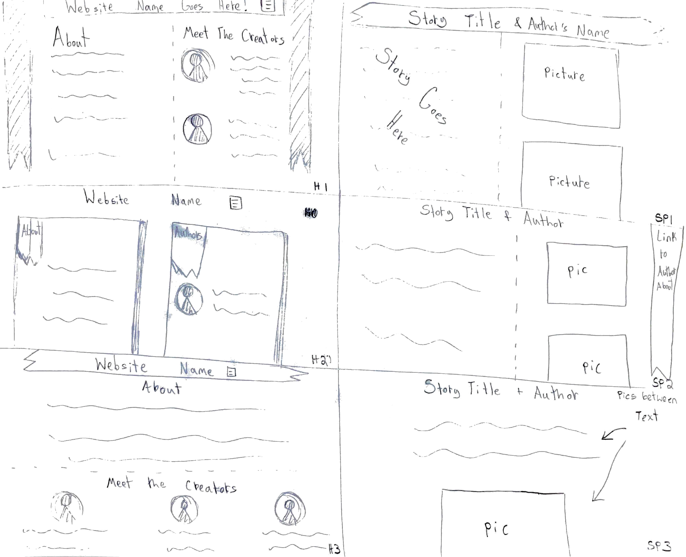
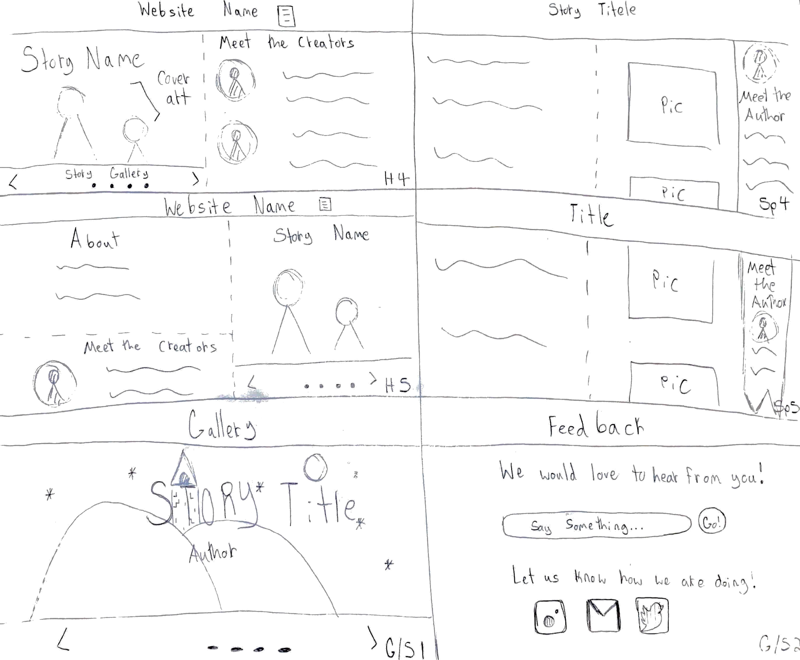
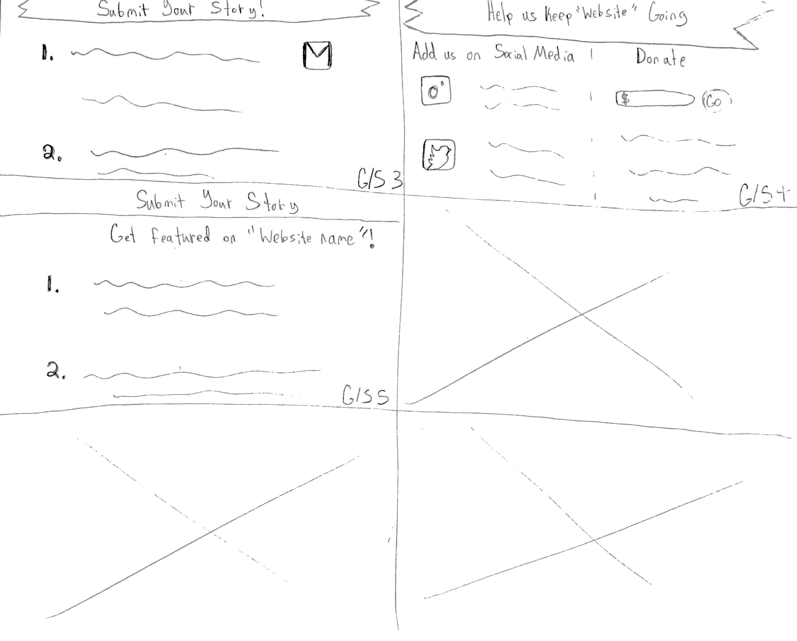

Lab 20-Team Project Sketches
Challenge
The purpose of this lab was to create sketches of the layout of my final project website.
Problems
I did not have alot of problems doing this, I just needed to get into the right mindset to create quick sketches without trying to perfect them.
Result
I drew 15 sketches of ideas I have for my group's website. I drew 5 homepage layouts, 5 content page layouts, one gallery layout, and four submission field ideas.


